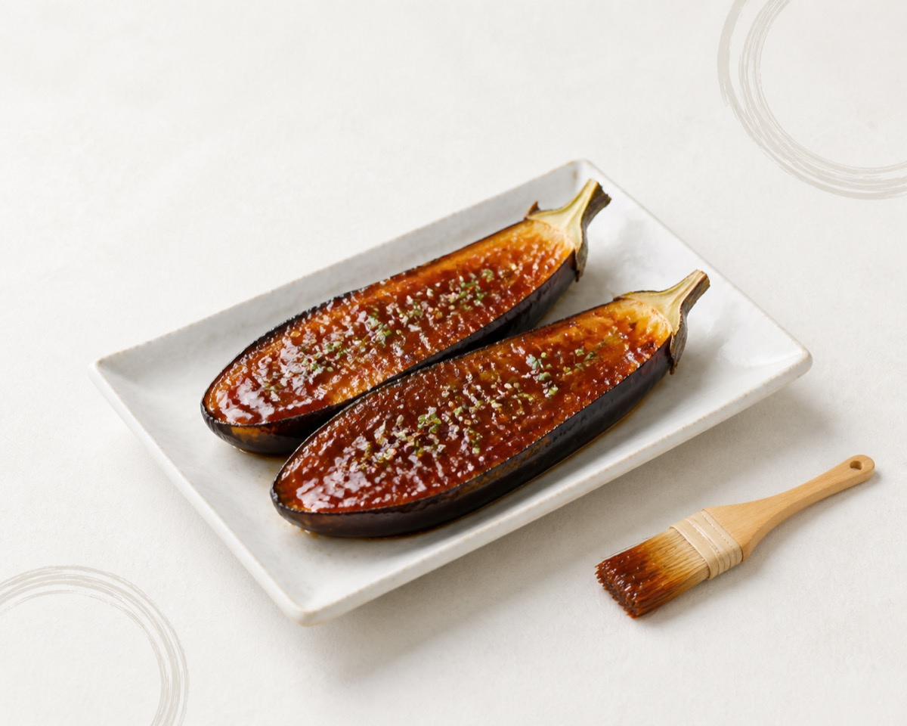

KURABIYORI TOKUSEN
味噌レシピ
蔵日和特選の味噌を使った、おうちで楽しめるレシピをご紹介します。
基本の味噌汁
豆腐とわかめ、香り立つ長ねぎ。蔵日和特選の味噌本来の風味が引き立つ、毎日飲みたい定番の一杯です。
材料（2人分）
- だし汁 400ml
- 蔵日和特選 味噌 大さじ2
- 絹豆腐 半丁
- 乾燥わかめ 大さじ1
- 長ねぎ 少々
作り方
- 鍋にだし汁を入れて温め、豆腐とわかめを加える。
- ひと煮立ちしたら火を弱め、味噌を溶き入れる。
- 沸騰させないよう温めたら、器に盛り長ねぎを散らす。

茄子の田楽（味噌だれ焼きなす）
とろける茄子に、甘辛い味噌だれをたっぷりと。蔵日和特選の味噌のコクが引き立つ、お酒にも合う一品です。
材料（2人分）
- 茄子 2本
- 蔵日和特選 味噌 大さじ3
- みりん 大さじ2
- 砂糖 大さじ1
- ごま 少々
作り方
- 茄子は縦半分に切り、切り込みを入れて素焼きにする。
- 味噌・みりん・砂糖を混ぜ合わせ、田楽味噌を作る。
- 焼いた茄子に田楽味噌を塗り、香ばしく仕上げてごまを散らす。